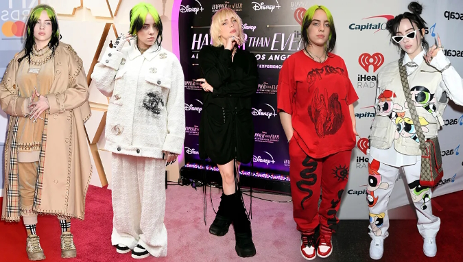

La evolución de la moda de Billie
Publicado el 24 de octubre de 2024 por Admin

Billie Eilish ha sido siempre una figura única no solo en la música, sino también en el mundo de la moda. Desde sus inicios, su estilo ha capturado la atención de millones, y su evolución ha reflejado tanto su crecimiento personal como su poder en la industria de la moda.
Al principio de su carrera, Billie optaba por ropa amplia y de estilo urbano, caracterizada por colores oscuros y gráficos llamativos. Esto no solo desafiaba los estereotipos de género, sino que también la protegía de ser cosificada en un entorno mediático. Con los años, este estilo evolucionó, y en 2021, vimos una transformación significativa en su imagen.
"Quiero poder ser versátil y usar lo que me haga sentir bien en el momento", comentó Billie en una entrevista. "La moda es otra forma de expresión, y estoy aprendiendo a explorar diferentes aspectos de mi estilo."
En la portada de Vogue 2021, Billie sorprendió al mundo con una estética completamente distinta, adoptando un estilo más glamuroso y elegante. Esto simbolizó una declaración de su empoderamiento y autonomía. Hoy en día, Billie sigue siendo una inspiración en el mundo de la moda, mostrando que la autenticidad y la autoaceptación son las tendencias más duraderas.
Su influencia se extiende más allá de la música; sus seguidores encuentran en su estilo un reflejo de libertad y autenticidad. Billie ha demostrado que la moda no es solo ropa, sino una poderosa herramienta para transmitir mensajes sobre identidad y autoestima.
Comentarios
EstiloFan dice:
"Amo cómo Billie ha cambiado su estilo con el tiempo. Siempre es auténtica y fiel a sí misma."
Publicado el 24 de octubre de 2024Moda2024 dice:
"La portada de Vogue fue increíble. Fue un cambio impresionante y hermoso."
Publicado el 24 de octubre de 2024